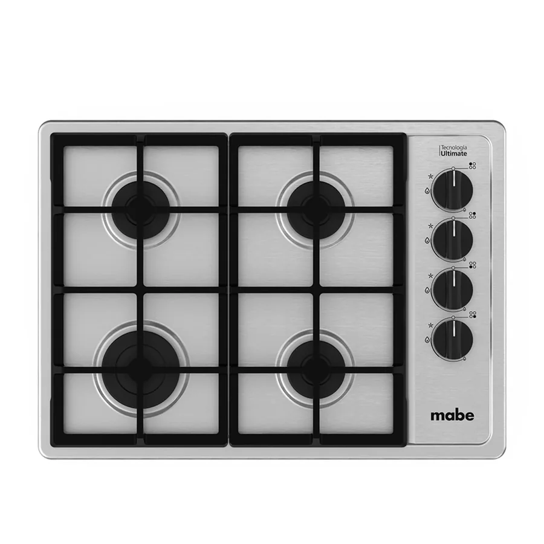

Imágenes de referencia de equipos Mabe.
Servicio a domicilio en Turubamba
Reparamos parrillas Mabe en Turubamba, sur de Quito. Predominan casas y conjuntos pequeños. Confirmamos la dirección exacta y la referencia por WhatsApp antes de ir.
Fallas que más nos consultan en Turubamba
- La perilla no gira o queda dura Vigilar
Válvula con grasa o desgastada. - El chispero hace clic sin parar Vigilar
Humedad, bujía sucia o módulo de encendido. - Una zona eléctrica o de inducción no calienta Revisar pronto
Resistencia, sensor, cable o tarjeta. - El vidrio se agrieta o se rompe Urgente
Golpe, olla pesada o golpe térmico.
Qué hacemos en la visita
- Revisamos el equipo en su lugar de uso
- Te explicamos la causa de la falla
- Confirmamos el costo antes de reparar
- Reparamos y probamos el funcionamiento
Particularidades de Quito para parrillas
A la altura de Quito conviene que el ajuste de aire de los quemadores lo haga un técnico, sobre todo al cambiar de tipo de suministro.
Referencias de la zona
Cómo pedir la visita
Escríbenos por WhatsApp con la marca y el modelo, qué falla presenta, tu dirección en Turubamba y una foto de la etiqueta. Te respondemos con el siguiente paso.
Preguntas frecuentes
¿Reparan parrillas Mabe en Turubamba?
Sí, atendemos Turubamba y sus alrededores. Escríbenos tu dirección y coordinamos.
¿Qué falla es la más común en parrillas?
Entre las que más nos consultan: la perilla no gira o queda dura, el chispero hace clic sin parar y una zona eléctrica o de inducción no calienta.
¿Dan el costo antes de reparar?
Sí. Primero diagnosticamos y te informamos el costo antes de continuar.